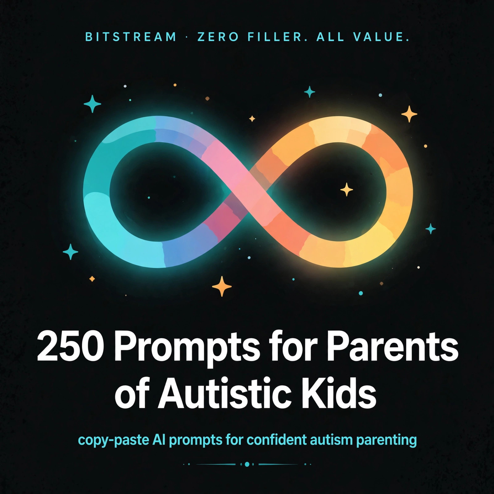

BITSTREAM · ZERO FILLER. ALL VALUE.
250 Prompts for Parents
of Autistic Kids
copy-paste AI prompts for confident autism parenting.
Open a free AI tool, paste, fill in the blanks, done.
NICHE PACK · $10.99
How to use this pack (60 seconds)
- Open a free AI tool — ChatGPT (chatgpt.com), Claude (claude.ai), Gemini (gemini.google.com), or Meta AI. No paid plan needed.
- Copy any prompt and replace the [BRACKETED] parts with your child's details.
- Be specific. Your child's age, strengths, sensory needs, school situation — specifics in, quality out.
- Treat the first answer as a draft. Reply with "make it shorter," "simpler words," or "one page" until it's right.
- Talk instead of typing. Every one of these tools has a voice mode — ramble while you walk, let it turn the ramble into clean text.
⚠ Important: AI is not a clinician. These prompts help you organize, explain, track, plan, and communicate — they never replace professional judgment. Never ask AI to diagnose, recommend therapies or medications, or predict outcomes. Always verify anything care-related with your child's care team (developmental pediatrician, psychologist, therapists) before acting on it.
Rule 1 — Organize, don't diagnose. Use AI for checklists, letters, visual schedules, logs, and plain-English explanations. Never ask it to decide whether your child is autistic, which therapy to choose, or whether a treatment is working.
Rule 2 — Confirm with the care team. Anything touching your child's care ends with "confirm with our care team." That line is load-bearing. Keep it in.
Rule 3 — Strengths first. Every plan in this pack starts from what your child does well. Build around the strengths; support around the gaps.
1 · Understanding the Diagnosis
What autism is (and isn't), plain-English explanations of reports, first-week organizing, and questions to bring to your child's care team.
PROMPT 001
Plain-English diagnosis explainer
Explain an autism diagnosis in plain, warm language for a parent who just heard it for the first time. No jargon, no doom. Cover what autism means, what it doesn't mean, and 3 things to do first. End by reminding me to discuss everything with our care team.
PROMPT 002
Decode the evaluation report
Here's my child's autism evaluation report: [paste it or summarize]. Translate the clinical language into plain English, define every term and acronym, and list the 5 most important takeaways for me as a parent. No new diagnosis — just translation.
PROMPT 003
First-two-weeks checklist
My [age]-year-old was just diagnosed with autism. Build me a calm, doable checklist for the first two weeks: who to contact, what paperwork to gather, and what NOT to worry about yet. Remind me to confirm next steps with our developmental pediatrician.
PROMPT 004
Neurodiversity-affirming mindset reset
I'm a parent of a newly diagnosed autistic [age]-year-old and I'm scared. Write me a short, honest, hopeful letter about the neurodiversity perspective: what it means to see autism as a difference, what it changes for parents, and why my child's future is still wide open. Warm and specific, no platitudes.
PROMPT 005
Evaluation questions for the psychologist
Our child's autism evaluation feedback meeting is in [2 weeks]. Draft 15 smart questions to ask the psychologist, organized into: understanding the diagnosis, daily-life impact, and next steps. I want questions I won't think of in the moment.
PROMPT 006
Explain autism to grandma
Write a warm, respectful one-page letter I can give to my child's grandparents explaining autism, clearing up the biggest myths ("bad parenting," "vaccines," "he'll grow out of it"), and telling them the 4 most helpful things they can do. Tone: loving, firm, no lectures.
PROMPT 007
Explain autism to my child
Write a gentle, positive script for telling my autistic [age]-year-old about their own diagnosis. Frame autism as a brain difference with strengths and challenges, use age-appropriate language, and include answers to "am I weird?" and "why is my brain different?"
PROMPT 008
Telling friends and family — options menu
Give me 5 different ways to tell [friends / our faith community / the neighborhood] about our child's autism diagnosis — from a one-liner to a longer message — so I can pick what fits. Each one warm, honest, and setting one clear boundary.
PROMPT 009
Glossary of the terms I'll hear
Build me a glossary of the 30 most common terms I'll hear in autism-land (IEP, stimming, masking, echolalia, OT, speech delay, etc.). One-sentence plain-English definition each, no jargon. I'll review anything clinical with our care team.
PROMPT 010
Strengths inventory template
Create a "strengths-first" profile template for my autistic [age]-year-old: special interests, sensory joys, social strengths, routines that work, communication style. Questions that help me notice what my child does WELL, so every plan starts from strengths.
PROMPT 011
Myth-busting cheat sheet
List the 12 most common autism myths parents hear ("autistic kids don't feel empathy," "screens cause autism," "he looks normal"), each with a short factual correction and a one-liner I can use when someone says it. Cite reputable sources like the CDC and Autism Science Foundation.
PROMPT 012
Autism vs. sensory processing vs. ADHD
Our care team mentioned possible [sensory processing differences / ADHD alongside autism]. Explain how these can overlap or co-occur in plain language, with 5 questions I should ask our developmental pediatrician to sort out what's what. No diagnosis from you — just a guide.
PROMPT 013
Questions for the developmental pediatrician
Our first follow-up with the developmental pediatrician is coming up. Based on this situation — [child's age, key challenges, current therapies] — draft 12 specific questions to ask, grouped by: health, development, school, and family. I'll let the doctor's answers guide our plan.
PROMPT 014
Book and resource shortlist
Recommend 10 actually-helpful books, podcasts, and websites for parents of newly diagnosed autistic kids. Prioritize neurodiversity-affirming, practical ones (not doom or miracle-cure), with a one-line note on who each is best for.
PROMPT 015
Binder organization system
Help me set up an autism paperwork binder: sections for evaluations, IEPs, therapy notes, insurance, and school communications. Give me tab labels, a filing routine (5 minutes after every appointment), and a one-page summary sheet I can hand any new provider.
PROMPT 016
One-page child summary for providers
Turn these notes about my child into a professional one-page summary I can hand new therapists and doctors: [age, diagnosis date, strengths, challenges, communication style, sensory needs, what works, what doesn't]. Scannable, respectful, strengths-first.
PROMPT 017
Milestone perspective check
I'm worried because my autistic [age]-year-old isn't [speaking in sentences / potty trained / sleeping through the night]. Explain how autism affects developmental timelines in a reassuring but honest way, and give me 6 questions to ask our care team about what's typical-for-them vs. what deserves follow-up.
PROMPT 018
Second-opinion prep
We're considering a second opinion on our child's autism evaluation. Help me organize: what records to bring, how to request them, and 8 questions to ask the new clinician. Keep the tone respectful — this is about confidence in the plan, not distrust.
PROMPT 019
Insurance authorization tracker
Build me a tracker for autism-related insurance authorizations: therapy type, provider, authorization dates, visit limits, case manager name/number. Add columns for renewal reminders so coverage never lapses silently.
PROMPT 020
Care-team contact sheet
Create a one-page care-team contact sheet template: roles (developmental pediatrician, psychologist, speech, OT, school contact), phone/email, last visit, next visit, and "call first when" notes for each. Emergency numbers at the top.
PROMPT 021
Explaining masking to teachers
Write a short explanation I can give my child's teacher about "masking" — why an autistic child can seem fine at school and fall apart at home, and what it costs the child. Include 4 things the teacher can do to reduce the masking pressure.
PROMPT 022
Gender and autism — what to know
I read that autistic [girls / gender-diverse kids] are often diagnosed later or differently. Summarize what research says, in plain language, and give me 5 questions for our care team about whether anything was missed in my child's [age]-year-old's evaluation.
PROMPT 023
Dentist/doctor visit prep one-pager
Write a one-page "about my patient" letter for my autistic [age]-year-old's [dentist / doctor]: sensory triggers, communication style, what calms them, what to avoid, and how to give warnings before touching. Respectful, specific, printable.
PROMPT 024
Processing your own feelings
I'm a parent who feels [grief / guilt / anger / relief — or all of it] about my child's autism diagnosis. Write a compassionate, non-judgmental reflection guide: 8 journaling prompts that help me process these feelings without shame, and when to consider talking to a counselor.
PROMPT 025
6-month review checklist
It's been [6 months] since my child's autism diagnosis. Build me a review checklist: what progress to look for, what records to update, which providers to re-check with, and 8 questions for our next care-team meeting. Organize, don't evaluate — the care team judges progress, not the AI.
2 · IEPs, 504s & School Advocacy
Accommodation lists, IEP meeting prep, advocacy letters, and the exact phrases that get things done with schools.
PROMPT 026
IEP vs. 504 — which fits us?
Explain the difference between an IEP and a 504 plan for an autistic child in [state], in plain parent language. Include who qualifies for each, what each one actually changes day-to-day, and 6 questions I should ask the school before choosing. I'll verify with our district.
PROMPT 027
Request an evaluation letter
Write a formal letter requesting a special-education evaluation for my autistic [grade]-grader. Include the legal trigger phrases that start the timeline, a list of what to attach, and how to send it so there's a paper trail.
PROMPT 028
Accommodation ideas list
Generate 40 specific classroom accommodations for an autistic [grade]-grader who [is sound-sensitive, struggles with transitions, needs movement breaks]. Organized by: environment, instruction, testing, and social. Concrete and practical, not vague.
PROMPT 029
IEP meeting prep — my agenda
Our IEP meeting is in [3 weeks]. My top 5 priorities for my autistic [age]-year-old are: [list them]. Build me a parent agenda: opening statement, what to ask for point by point, and the exact phrases to use if the school says "we don't do that."
PROMPT 030
SMART IEP goals draft
Draft 12 sample SMART IEP goals for an autistic [grade]-grader focusing on [communication, self-regulation, and social participation] — as STARTING POINTS for discussion with the IEP team. Each measurable, realistic, and strengths-based. The team finalizes them, not the AI.
PROMPT 031
Parent concerns letter
Write a one-page "Parent Concerns" statement for my child's IEP. Our concerns: [meltdowns at transitions, cafeteria overwhelm, no friends at recess]. Professional tone, specific examples with dates, and a clear ask at the end. This goes into the official record.
PROMPT 032
What to bring to the IEP table
Give me a checklist of everything to bring to an IEP meeting for my autistic child: documents, data I've collected, questions, and who I can legally bring with me. Plus 3 things most parents forget.
PROMPT 033
Responding to a denied request
The school denied our request for [a 1:1 aide / extended time / sensory breaks]. Draft a respectful, firm follow-up email that asks for the denial in writing, cites the reason I should ask for, and requests what the next step is. Keep it professional, not adversarial.
PROMPT 034
Sensory accommodations for the classroom
My autistic child is overwhelmed by [fluorescent lights, loud hallways, the cafeteria]. Draft 15 specific sensory accommodations to request at school, from seating to lighting to hallway passes, written the way an IEP actually phrases them.
PROMPT 035
Transition plan between grades
My autistic child moves from [elementary to middle school] next year. Build a transition plan checklist: what the current school must hand over, a "meet the team" plan, a one-page profile for new teachers, and how to preview the new building. I'll confirm details with the district.
PROMPT 036
Teacher introduction letter
Write a warm, practical letter from me to my autistic child's new [grade] teacher: who my child is, what works, warning signs of overwhelm, how to de-escalate, and my contact info. One page, strengths-first, no diagnosis oversharing beyond what's needed.
PROMPT 037
Behavior plan questions
The school wants to write a behavior plan for my autistic child. Give me 14 questions to ask BEFORE I sign anything — about data collection, who implements it, how success is measured, and what happens if it doesn't work. I'll bring these to the meeting.
PROMPT 038
Documenting incidents that matter
Create an incident log template for school issues affecting my autistic child: date, what happened, who was involved, what the school did, and my follow-up. Plus a guide on what counts as worth documenting and how often to review it.
PROMPT 039
Explaining autism to classmates
Draft 3 age-appropriate scripts for a teacher to explain autism to my child's [2nd-grade] class — kind, simple, and focused on "different brains, same respect." No pity framing, no medical detail.
PROMPT 040
Recess and lunch support plan
Recess and the cafeteria are the hardest parts of my autistic child's school day because [noise, unstructured time, no friends]. Draft 10 specific supports to request: quiet lunch options, structured recess choices, peer buddy systems, and adult check-ins.
PROMPT 041
Homework accommodation ideas
Homework takes my autistic [grade]-grader [3 hours] and ends in tears. Draft 12 homework accommodations to propose: reduced quantity, alternative formats, visual checklists, and a "stop rule." Framed as access, not excuses.
PROMPT 042
Field trip and assembly plan
Build a field-trip and school-assembly support plan for my autistic [age]-year-old: preview strategies, sensory kit checklist, exit plan, buddy assignment, and a note template I can send the teacher before each event.
PROMPT 043
ESY (extended school year) argument
Help me make the case for Extended School Year services for my autistic child, who [regresses significantly over summer breaks]. Draft the parent statement: what regression we've seen, what data to bring, and the exact questions to ask the IEP team.
PROMPT 044
Progress monitoring questions
Give me 10 questions to ask at every IEP progress review for my autistic child: how goals are measured, who's collecting data, what the numbers actually show, and what changes when a goal isn't met. So I never nod along to vague updates again.
PROMPT 045
Advocate or attorney — when?
Explain, in plain language, when a parent of an autistic child should consider bringing a special-education advocate or attorney to school meetings. List 8 red-flag situations, what each professional does, and how to find one. General information only — I'll verify locally.
PROMPT 046
Discipline and autism — know the rights
My autistic child got in trouble at school for [a meltdown / leaving class / hitting]. Explain manifestation determination reviews in parent-friendly language: what they are, when the school must do one, and 8 questions to ask at the meeting. General info; I'll confirm with an advocate if needed.
PROMPT 047
College-path planning early
My autistic child is in [8th grade]. Outline what transition planning should look like from here: skills to build, how IEPs change in high school, college disability offices vs. K-12 rights, and 10 questions for our first transition meeting.
PROMPT 048
Private school considerations
We're considering a [private / charter] school for our autistic child. Explain what changes with IEP rights outside public school, what questions to ask on the tour, and how to evaluate whether a school is truly autism-friendly vs. just saying it.
PROMPT 049
Annual review prep
Our annual IEP review is in [2 months]. Build me a prep worksheet: what data to collect now, how to evaluate whether each goal was met, what to request for next year, and my top-3 asks ranked. So I walk in organized.
PROMPT 050
Summer services request
Draft a request for summer services for my autistic child based on [regression last summer, need for routine continuity]. Include the difference between ESY and summer camp supports, what documentation helps, and the timeline to ask by. I'll confirm with the district.
3 · Therapy Options & Questions to Ask Providers
What each therapy does (and doesn't do), interview questions for providers, and how to track whether support is helping — without AI playing clinician.
PROMPT 051
Therapy landscape overview
Give me a parent-friendly overview of the main therapies autistic children receive: speech, OT, physical therapy, ABA, play-based approaches, social skills groups. For each: what it targets, what sessions look like, and what questions to ask before starting. Informational only — our care team guides our choices.
PROMPT 052
Interview questions for a new therapist
Draft 20 questions to ask when interviewing a new [speech / OT / ABA] therapist for my autistic [age]-year-old: their experience, their philosophy, how they handle meltdowns, parent involvement, and how they measure progress. So I can compare providers apples to apples.
PROMPT 053
Red flags in therapy providers
List 15 red flags to watch for in autism therapy providers — from dismissing parent input to punishment-based methods to miracle-cure promises. For each, what it looks like in practice and what to do if I spot it. I'll always trust my gut and our care team.
PROMPT 054
What is ABA — honest explainer
Explain ABA therapy to me honestly and evenhandedly: what it is, the different modern approaches, why some autistic adults criticize older forms, and 10 questions to ask any ABA provider about their methods. I need the full picture to discuss with our care team.
PROMPT 055
Speech therapy — what to expect
My autistic [age]-year-old is starting speech therapy and is [minimally speaking / speaking but struggling with conversation]. Explain what speech therapy actually works on for autistic kids, what AAC options exist, and 8 questions for the speech therapist at intake. Informational only.
PROMPT 056
OT — what to expect
My autistic child is starting occupational therapy for [sensory sensitivities and fine-motor delays]. Explain what OT sessions look like for autistic kids, what a sensory diet is, and 8 questions to ask the OT. I'll confirm the plan with our care team.
PROMPT 057
AAC devices — getting started
Our speech therapist suggested trying AAC for my [minimally speaking] autistic [age]-year-old. Explain the main AAC options (apps, devices, low-tech boards), how evaluations work, funding paths, and 10 questions to ask. No product recommendations as prescriptions — just a map.
PROMPT 058
Therapy schedule sanity check
My autistic [age]-year-old has [list current therapies and hours] plus school. Help me build a weekly schedule that fits it all without burning out my child or our family — including downtime, travel, and homework. Flag signs of over-scheduling to discuss with our care team.
PROMPT 059
Tracking whether therapy is helping
Create a simple parent-friendly tracker for therapy progress: what to observe monthly for [speech / OT], how to note changes without over-analyzing, and 6 questions to bring to the 3-month review. Observation and organization only — the provider evaluates effectiveness.
PROMPT 060
Questions for the 3-month therapy review
Draft 12 questions for my child's 3-month [speech therapy] review: what's improved, what hasn't, whether goals should change, what I should practice at home, and when to consider a different approach. I'll let the therapist's answers guide us.
PROMPT 061
Home practice that fits real life
Our [speech / OT] therapist gave us home practice, but we have [limited time / a busy household / siblings]. Turn these exercises into 10-minute daily routines that fit real life: [list the exercises]. Fun, low-pressure, and realistic.
PROMPT 062
Switching providers gracefully
We need to change our child's [OT] provider because [reason]. Draft: a professional goodbye email, a records-transfer request, and a one-page handoff summary for the new provider. Keep every relationship professional.
PROMPT 063
Understanding therapy goals
Here are my child's therapy goals: [paste them]. Translate each into plain English: what it means in daily life, what progress looks like, and how long change typically takes. No evaluation of the goals themselves — just translation for me.
PROMPT 064
Waitlist action plan
We're on a [6-month] waitlist for [speech therapy] for our autistic [age]-year-old. Build a waitlist action plan: what we can do at home now (general strategies only), how to check waitlist status, backup provider options, and what to ask our pediatrician in the meantime.
PROMPT 065
Therapy and school coordination
Draft an email introducing my child's private [speech] therapist to the school team, requesting a 20-minute coordination call. Include 8 agenda items so the school services and private therapy work together instead of duplicating or conflicting.
PROMPT 066
Summer therapy planning
School-based therapies pause in summer. Help me plan for my autistic [age]-year-old: private options, community programs, home activities that maintain skills, and a budget-friendly mix. I'll confirm any plan with our care team.
PROMPT 067
Feeding therapy basics
My autistic child eats only [5 foods] and our pediatrician mentioned feeding therapy. Explain what feeding therapy involves, what the evaluation looks like, and 10 questions to ask. No feeding advice from you — just what to expect and ask.
PROMPT 068
Medication conversation prep
Our care team raised the possibility of medication for [anxiety / ADHD symptoms / sleep] alongside our child's autism. Help me prepare: 15 questions to ask the prescribing doctor about benefits, side effects, monitoring, and alternatives. I will not make medication decisions with AI — this is prep for the doctor visit only.
PROMPT 069
Therapy cost and funding map
Map out how families typically pay for autism therapies: insurance authorizations, Medicaid waivers, school-provided services, grants, and tax deductions. Include what paperwork each path needs. General information — I'll verify what applies in [my state].
PROMPT 070
Telehealth therapy evaluation
We're considering telehealth [speech therapy] for our autistic [age]-year-old. List the pros and cons vs. in-person for autistic kids, 8 questions to ask the provider about their telehealth approach, and setup tips. Informational only.
PROMPT 071
Preparing my child for therapy
Write a social story for my autistic [age]-year-old about starting [speech therapy]: where we go, who we'll meet, what we'll do, and that it's okay to feel [nervous]. Simple sentences, positive framing, customizable blanks.
PROMPT 072
When therapy feels wrong
My child [cries before / resists / shuts down during] [OT] sessions. Help me sort out whether this is normal adjustment or a real problem: 10 questions to ask myself, 8 to ask the therapist, and when to raise it with our care team. Trust-building, not therapy advice.
PROMPT 073
Sibling inclusion in therapy goals
Draft 8 questions to ask our child's therapy team about appropriately including [siblings]: sibling training sessions, what siblings can practice at home, and boundaries so siblings aren't turned into junior therapists.
PROMPT 074
Annual therapy audit
Build an annual therapy audit worksheet for my autistic child: list every current therapy, hours, cost, what it's targeting, and observed changes this year. Plus 6 decision questions for our care team about continuing, pausing, or changing each one.
PROMPT 075
Explaining therapies to my child
Write 5 short, positive explanations I can give my autistic [age]-year-old about why they go to [speech / OT]: honest, age-appropriate, no "fixing" language. Something like "this helps your brain and body work together even better."
4 · Sensory-Friendly Home & Routines
Sensory profiles, calming spaces, visual schedules, and routines that run on rails instead of reminders.
PROMPT 076
Build our sensory profile
Help me map my autistic [age]-year-old's sensory profile. I'll describe their reactions: [covers ears at the vacuum, seeks deep pressure, hates tags on clothes, loves spinning]. Organize it by sense, note seeking vs. avoiding patterns, and turn it into a one-page reference for caregivers. Observation only — I'll share it with our OT.
PROMPT 077
Sensory-friendly bedroom makeover
Redesign my autistic [age]-year-old's bedroom for sensory comfort on a [$200] budget. They are [light-sensitive, noise-sensitive, seek deep pressure]. Give me a prioritized shopping list, DIY options, and what to avoid. Comfort design only, no medical claims.
PROMPT 078
Calm-down corner setup
Design a calm-down corner for my autistic [age]-year-old in our [living room]: what to include (seating, lighting, fidgets, noise options), how to introduce it as a choice not a punishment, and a simple visual "I'm going to my corner" card.
PROMPT 079
Morning routine visual schedule
Create a morning routine visual schedule for my autistic [6]-year-old: wake up through out-the-door in [45 minutes]. Steps: [list them]. Make it printable with simple icons described, checkboxes, and a "done" reward at the end.
PROMPT 080
After-school decompression routine
My autistic child falls apart after school because [holding it together all day]. Design a 60-minute after-school decompression routine: sensory reset activities, snack, no-demand time, and the signal that homework time is starting. Low-pressure and realistic.
PROMPT 081
Bedtime routine that works
Build a calming bedtime routine for my autistic [age]-year-old who [can't wind down, fears the dark, wakes at 3am]. Sensory-friendly steps, visual schedule format, and what to do about night wakings. General strategies only — persistent sleep issues go to our pediatrician.
PROMPT 082
Weekend routine template
Weekends fall apart without school structure. Build a flexible weekend routine template for my autistic [age]-year-old: morning anchor, one outing, quiet time, and evening wind-down — with built-in choice points so it doesn't feel rigid.
PROMPT 083
Transition warnings system
Transitions trigger meltdowns for my autistic child. Design a transition warning system for home: visual timers, countdown scripts, "first/then" boards, and what to do when a transition still goes sideways. Give me exact phrases to say.
PROMPT 084
Sensory diet — home version
Our OT mentioned a sensory diet. Help me build a DAILY HOME schedule of sensory activities for my autistic [age]-year-old: morning, after school, evening — using things we have at home. I'll confirm every activity with our OT before starting.
PROMPT 085
Noisy-house survival kit
Our house is loud: [siblings, dogs, small kitchen], and my autistic child is sound-sensitive. Give me 15 practical noise-reduction ideas — from rearranging rooms to affordable tools to house rules — ranked by impact per dollar.
PROMPT 086
Haircut survival plan
Haircuts are a crisis for my autistic [age]-year-old: [buzzers, touching the head, the cape]. Build a step-by-step desensitization and coping plan: practice at home, what to tell the barber, sensory tools to bring, and a home-cut alternative. I'll check the approach with our OT.
PROMPT 087
Clothing sensory solutions
My autistic child will only wear [2 specific shirts] and melts down over tags, seams, and new fabrics. Give me 12 practical strategies: how to introduce new clothes, what fabrics to try, laundry tricks, and school-dress-code workarounds.
PROMPT 088
Car ride calm kit
Build a car-ride calm kit for my autistic [age]-year-old who [hates long drives, gets carsick, screams at traffic noise]: what to pack, how to set up the seat area, and a visual "trip map" so they know what's coming.
PROMPT 089
Grocery store game plan
Grocery trips end in meltdowns. Build a sensory-friendly grocery plan: best times to go, a visual shopping list my autistic [age]-year-old can follow, jobs to give them, and an exit strategy. Plus a delivery/pickup comparison so I know my options.
PROMPT 090
Holiday and event prep
Holidays overwhelm my autistic child: [noise, crowds, broken routines]. Build a holiday survival plan for [Thanksgiving at grandma's]: preview scripts, sensory kit, quiet-room setup, exit plan, and how to explain boundaries to relatives in advance.
PROMPT 091
Fire drill / loud event prep
Write a social story and prep plan for my autistic [age]-year-old about [fire drills at school / fireworks on the 4th]: what will happen, how loud it will be, what they can do, and what I'll do. Reassuring and specific.
PROMPT 092
Stimming — understanding and supporting
Explain stimming to me as a parent: what it is, why autistic kids do it, when it's helpful vs. when it might need support, and how to respond to [hand-flapping / rocking / vocal stims] in public. Respectful, neurodiversity-affirming, and practical.
PROMPT 093
Screen time that regulates
My autistic [age]-year-old uses [tablet / specific shows] to regulate. Help me build a healthy screen routine: which content genuinely helps vs. overstimulates, time limits that don't cause meltdowns, and transition-off strategies. No judgment, just structure.
PROMPT 094
Special interest as a superpower
My autistic child's special interest is [trains / dinosaurs / elevators]. Show me 15 ways to use it as a bridge: learning, social connection, calming, rewards, and conversation starters — without exploiting it or taking the joy out of it.
PROMPT 095
New-place preview pack
Create a "new place preview" template I can fill in before taking my autistic child anywhere new: photos to take, what to tell them in advance, sensory unknowns, quiet spots, and exit plan. Reusable for restaurants, parties, vacations.
PROMPT 096
Rainy-day regulation menu
Build a "regulation menu" of 20 indoor activities for my autistic [age]-year-old, sorted by sensory need: calming, alerting, organizing. Visual-card format I can print, so my child can point to what they need.
PROMPT 097
Chore adaptations
Adapt 10 common kid chores for my autistic [age]-year-old who [hates loud vacuums, struggles with multi-step tasks]: visual step cards, sensory-friendly alternatives, and which chores build real skills vs. which to skip for now.
PROMPT 098
Pet introduction plan
We're considering a [dog / cat] and our child is autistic and [sound-sensitive, loves animals]. Build a decision checklist: is our family ready, which traits to look for, introduction steps, and sensory considerations. I'll discuss with our care team too.
PROMPT 099
Home safety audit
Create a home safety audit checklist for a family with an autistic [age]-year-old who [elopes / climbs / puts things in mouth]: room by room, what to secure, and affordable fixes. Safety planning only — urgent concerns go straight to our pediatrician.
PROMPT 100
Elopement safety plan
My autistic child has eloped [twice]. Help me build a safety plan: prevention at home, what to teach my child, ID options, a neighbor alert letter, and exactly what to tell 911. I'll review this with our care team and local police non-emergency line.
5 · Communication Strategies
AAC, visual supports, social stories, and everyday language shifts that make your child feel understood.
PROMPT 101
Visual supports starter kit
Build a visual supports starter kit for my autistic [age]-year-old who [understands better than they speak]: first/then boards, choice boards, "I need" cards, and a daily schedule. Describe each card's design so I can make them tonight.
PROMPT 102
Social story: going to the dentist
Write a social story for my autistic [7]-year-old about a dental checkup: the waiting room, the chair, the light, the tools, the sounds. Simple present-tense sentences, one idea per page, reassuring ending. Leave blanks for our dentist's name.
PROMPT 103
Social story: first day of school
Write a social story for my autistic [age]-year-old starting [3rd grade at a new school]: the bus, the classroom, the teacher, lunch, and pickup. Include what to do if they feel overwhelmed. Warm, specific, customizable.
PROMPT 104
Social story: getting a haircut
Write a social story for my autistic [age]-year-old about getting a haircut: the chair, the cape, the clippers' sound, and that they can say "break." One idea per page, positive ending, blanks for our barber's name.
PROMPT 105
Social story: when plans change
Write a social story for my autistic [age]-year-old about plans changing unexpectedly: why it happens, that it's okay to feel upset, and 3 things they can do. Reassuring, with a practice scenario we can role-play.
PROMPT 106
AAC phrase bank
Build a starter AAC phrase bank for my [minimally speaking] autistic [age]-year-old: 30 essential phrases organized by needs, feelings, questions, and social — written the way a kid would actually say them. For use with our speech therapist's guidance.
PROMPT 107
Modeling AAC at home
Our speech therapist wants us to model AAC at home. Give me a 2-week plan: how to model without pressuring, 10 everyday moments to model in, what to do when my child doesn't respond, and how to track progress. I'll confirm with our therapist.
PROMPT 108
Echolalia — what's happening
My autistic child repeats [entire cartoon scripts / my questions back to me]. Explain echolalia in plain language: the types, what purpose it serves, and 8 ways to respond supportively. Affirming and practical — no "fixing" framing.
PROMPT 109
Scripting as communication
My autistic [age]-year-old communicates using [movie lines / memorized phrases]. Explain gestalt language processing simply, how to recognize what the scripts mean, and 10 ways to build on them toward flexible language. I'll share this with our speech therapist.
PROMPT 110
Yes/no communication board
Design a simple yes/no/maybe communication board for my autistic child for [medical appointments]: big clear options, pain scale faces, body outline to point to, and "I need a break" card. Printable, high-contrast.
PROMPT 111
Explaining "why" in their language
My autistic [age]-year-old needs literal, concrete explanations. Rewrite these 10 common parent phrases into autism-friendly versions: ["because I said so," "we'll see," "in a minute," "be good"] — plus the principle behind each rewrite so I can do it myself.
PROMPT 112
Choice-giving scripts
Give me 20 ready-to-use choice scripts for daily moments with my autistic [age]-year-old: "Do you want the [red cup or blue cup]?" style. Cover mornings, meals, bedtime, and outings. Limited choices that preserve autonomy.
PROMPT 113
Waiting and turn-taking visuals
Design waiting and turn-taking visual tools for my autistic [age]-year-old: a "my turn / your turn" card, a waiting countdown strip, and scripts for "wait" that don't cause meltdowns. For home and playground use.
PROMPT 114
Feelings vocabulary builder
Build a feelings vocabulary program for my autistic [age]-year-old who only says "fine" or "mad": a feelings chart with faces, body-sensation words, and 10 daily games to practice. Start simple, build gradually. I'll coordinate with our therapist.
PROMPT 115
"I need a break" system
Create an "I need a break" system for my autistic child: a break card design, where breaks happen at home and school, what breaks look like, and scripts for honoring the request even when it's inconvenient. Respect the communication.
PROMPT 116
Non-speaking, not non-thinking
Write me a perspective piece as a parent of a [minimally speaking] autistic child: why presuming competence matters, 8 practical ways to presume competence daily, and how to push back when others underestimate my child. Affirming and fierce.
PROMPT 117
Conversation practice at home
Design 15 low-pressure conversation practice games for my autistic [age]-year-old who [answers questions but doesn't ask any]: question-asking games, commenting practice, and topic-maintenance activities. Fun first, skills second. I'll align with our speech therapist.
PROMPT 118
Phone and video call practice
My autistic [age]-year-old struggles with [phone calls / video chats with grandparents]. Build a step-by-step practice plan: scripts to start, how to end gracefully, visual cues, and when it's okay to just opt out.
PROMPT 119
Explaining sarcasm and idioms
My autistic [age]-year-old takes everything literally. Create a fun "idiom of the week" program: 20 common idioms explained literally vs. intended meaning, with cartoon-style descriptions and practice sentences. Make it a game, not a lesson.
PROMPT 120
Writing and typing as communication
My autistic [age]-year-old communicates better in writing than speech. Give me 10 ways to build on that strength: texting practice, journaling, typed choices, email with grandparents, and how to advocate for written options at school.
PROMPT 121
Public meltdown communication card
Design a small card I can hand to bystanders during my child's public meltdown: what autism is in 2 sentences, what helps, what doesn't, and "please give us space." Dignified, brief, printable wallet-size.
PROMPT 122
Asking for help scripts
Write 12 "asking for help" scripts for my autistic [age]-year-old for school and public: "I don't understand," "too loud," "I need help," "bathroom please." Short, memorizable, and polite without being performative.
PROMPT 123
Reading body language — gentle guide
Create a gentle, game-based guide for teaching my autistic [age]-year-old to notice basic body language: 10 emotions with face/body descriptions, matching games, and real-life practice moments. No shaming, no "you should just know."
PROMPT 124
Storytelling with my child
Design 10 collaborative storytelling activities for my [minimally speaking / scripting] autistic child: picture-based stories, "finish the sentence" games, and ways to honor their scripts inside the story. Connection over correction.
PROMPT 125
Communication passport
Build a "communication passport" template for my autistic child: how they communicate, how to talk TO them, what their behaviors mean, and emergency communication tips. One page for teachers, babysitters, and relatives.
6 · Behavior Support Plans
Understanding behavior as communication, meltdown vs. tantrum, ABC tracking, and plans built on prevention — not punishment.
PROMPT 126
Behavior as communication primer
Explain "all behavior is communication" for autism parents with 10 real examples: what the behavior looks like, what need it might signal, and what to try instead of punishing. Concrete, compassionate, jargon-free.
PROMPT 127
Meltdown vs. tantrum guide
Explain the difference between an autistic meltdown and a tantrum: what's happening neurologically, how to tell them apart in the moment, and why the response must be completely different. Include a quick-reference card for caregivers.
PROMPT 128
ABC behavior tracker
Build an ABC (Antecedent-Behavior-Consequence) tracking sheet for my autistic [age]-year-old's [hitting when asked to stop an activity]: what to record, how to spot patterns after 2 weeks, and what to bring to our behavior specialist. Observation tool only.
PROMPT 129
During-meltdown playbook
Write a during-meltdown playbook for our family: what to do in the first 30 seconds, what NOT to do (no reasoning, no threats, no touching without consent), how to keep everyone safe, and what recovery looks like. One page, fridge-worthy.
PROMPT 130
After-meltdown recovery routine
Design an after-meltdown recovery routine for my autistic [age]-year-old: the quiet period, reconnection scripts ("I'm here, you're safe"), when to talk about what happened, and how to repair without shame. For the child AND the parent.
PROMPT 131
Shutdown — the quiet crisis
My autistic child doesn't meltdown — they shut down: [go silent, freeze, withdraw]. Explain autistic shutdowns, how they differ from defiance, and 10 gentle ways to support a child in shutdown. Often missed, deeply important.
PROMPT 132
Prevention plan for top 3 triggers
My child's top meltdown triggers are [transitions, denied requests, sensory overload]. For each trigger, build a prevention plan: warning signs, what to change in the environment, scripts to use, and a backup plan. Prevention over reaction.
PROMPT 133
Teaching "I'm getting upset" signals
Create a program to teach my autistic [age]-year-old to signal BEFORE meltdown: a 5-point feelings scale, body-clue detective games, and practice scripts. Build the off-ramp before they need it. I'll coordinate with our therapist.
PROMPT 134
Aggression safety plan
My autistic child sometimes [hits / bites / throws things] during meltdowns. Help me build a family safety plan: protecting siblings, safe positioning, when to call for help, and what to document. I'll review this with our behavior specialist and pediatrician.
PROMPT 135
Self-injury — what parents should know
My autistic child sometimes [bangs their head / bites their hand] when overwhelmed. Explain what research says about why this happens, immediate safety steps, and exactly what to tell our care team. Urgent concerns go to our pediatrician immediately — this is for understanding and prep.
PROMPT 136
Reward systems that work
Design a reward system for my autistic [age]-year-old targeting [morning routine completion]: token board design, meaningful rewards (not just candy), how to fade rewards over time, and what to do when it stops working. Positive and practical.
PROMPT 137
Natural consequences, autism-style
Explain how to use natural and logical consequences with an autistic child who [struggles with cause-and-effect thinking]: 12 examples of consequences that teach vs. punish, and why traditional punishment backfires. Firm kindness.
PROMPT 138
Public behavior plan
Build a public-outing behavior plan for my autistic [age]-year-old: pre-visit preview, jobs to give them, sensory kit, the "code word" for leaving, and scripts for bystanders. So outings feel possible again.
PROMPT 139
Sibling conflict mediator
My autistic child and sibling [fight over the tablet / personal space] daily. Build a conflict plan: prevention (separate spaces, visual turn timers), in-the-moment scripts, and repair rituals. Fair to both kids — no villain, no victim.
PROMPT 140
School behavior plan review
Here's my child's school behavior plan: [paste it]. Help me evaluate it as a parent: is it prevention-based or punishment-based, are the goals measurable, what's missing, and 8 questions to ask the team. I'll bring concerns to the IEP meeting.
PROMPT 141
Replacing problem behavior
My child [screams] to [escape loud rooms]. Help me brainstorm replacement behaviors to teach: what skill replaces the screaming, how to teach it step by step, and how everyone (home, school) reinforces it consistently. I'll confirm the plan with our behavior specialist.
PROMPT 142
Demand avoidance strategies
My autistic child resists even fun demands — [won't get dressed, won't start preferred activities when asked]. Explain demand avoidance simply and give me 15 low-demand parenting strategies: declarative language, choices, humor, and timing tricks.
PROMPT 143
Bedtime refusal plan
Bedtime takes [2 hours] with my autistic [age]-year-old: [stalling, getting up, anxiety]. Build a plan: bedtime pass system, visual routine, addressing the anxiety underneath, and when to loop in our pediatrician. Gentle but structured.
PROMPT 144
Food refusal without force
My autistic child refuses [entire food groups / anything new]. Give me 12 pressure-free strategies: food chaining, exposure without eating, sensory exploration, and when picky eating becomes a medical concern to raise with our pediatrician. No force-feeding, ever.
PROMPT 145
Screen-time battles plan
Turning off the tablet causes [45-minute] meltdowns. Build a screen-transition plan: visual timers, "save points," transition warnings, alternative regulation activities, and a consistent routine. Firm, kind, and meltdown-informed.
PROMPT 146
Morning routine battles
Mornings are a war zone: [won't dress, won't eat, misses the bus]. Rebuild our morning for my autistic [age]-year-old: night-before prep checklist, visual schedule, built-in choices, and what to drop when we're running late. Peace over perfection.
PROMPT 147
Babysitter behavior guide
Write a babysitter behavior guide for my autistic [age]-year-old: top 3 triggers and preventions, what a meltdown looks like vs. misbehavior, exactly what to do, and when to call me. Two pages max, calm tone, emergency numbers on top.
PROMPT 148
Grandparent behavior briefing
Write a loving but clear briefing for grandparents who ["don't believe in" meltdowns / use old-school discipline]: why punishment doesn't work for autistic behavior, what to do instead, and 3 non-negotiable rules for their house. Firm, respectful, bridge-building.
PROMPT 149
Tracking progress without obsessing
Create a simple monthly behavior snapshot for my autistic child: 5 things to note, a 1-10 scale that means something, and space for "what's working." Designed to show trends to our care team without turning parenting into data entry.
PROMPT 150
Celebrating behavior wins
Help me notice and celebrate my autistic child's behavior progress: a "win journal" template, 20 specific praises that go beyond "good job," and how to celebrate effort and growth — not just compliance. Joy is data too.
7 · Social Skills & Friendships
Playdates that work, recess strategies, birthday parties, and helping your child find their people — on their terms.
PROMPT 151
Playdate success blueprint
Build a playdate success blueprint for my autistic [age]-year-old: ideal length, structure vs. free play, activity ideas around [their special interest], how to brief the other parent, and an exit plan. Short, structured, and fun.
PROMPT 152
Finding the right friend
My autistic child has no close friends. Give me 12 realistic places and ways to find compatible peers: interest-based clubs, structured activities, online communities for older kids, and how to spot a kind kid vs. a convenient one.
PROMPT 153
Playground survival guide
Recess is lonely for my autistic [age]-year-old who [wanders alone / doesn't know how to join games]. Build a recess plan: 5 ways to join play, structured recess options to request, and scripts for "can I play?" Practice at home first.
PROMPT 154
Birthday party playbook
Build a birthday-party playbook for my autistic child — both attending parties and hosting: preview scripts, sensory prep, quiet-room plan, gift-opening expectations, and a party format that actually works for autistic kids (shorter, structured, smaller).
PROMPT 155
Hosting an autism-friendly party
Plan an autism-friendly [8th] birthday party for my child: guest list size, timing, structured activities around [their special interest], sensory considerations, and invitations that set expectations kindly. Fun for every kid there.
PROMPT 156
Teaching turn-taking in games
My autistic [age]-year-old [can't lose at games / won't take turns]. Design 10 game-based turn-taking lessons: which games to start with, visual turn cues, how to practice losing gracefully, and when to just let them win sometimes.
PROMPT 157
Personal space lessons
My autistic child [stands too close / hugs without asking]. Create a kind, visual personal-space teaching plan: hula-hoop activities, "ask first" scripts, and how to teach consent in both directions. Respectful of sensory-seeking needs.
PROMPT 158
Understanding teasing vs. joking
My autistic [age]-year-old can't tell teasing from joking. Build a teaching plan: 10 example scenarios with answers, the "would a friend say this?" test, and what to do when it feels mean. Rehearse, don't lecture.
PROMPT 159
Bullying response plan
I suspect my autistic child is being [excluded / teased / bullied] at school. Build a response plan: how to get the full story from my child, what to document, the email to the school, and how to rebuild my child's confidence. Take it seriously from day one.
PROMPT 160
Peer buddy program request
Draft a request for a peer buddy or lunch-bunch program for my autistic [grade]-grader: what the program looks like, why it helps, and the email to send the school counselor. Structured social time beats unstructured hope.
PROMPT 161
Social skills group evaluation
We're considering a social skills group for our autistic [age]-year-old. Give me 12 questions to evaluate the program: approach, group size, whether it's neurodiversity-affirming vs. compliance-based, and how progress is measured. I'll discuss options with our care team.
PROMPT 162
Parallel play is still play
Write me a reassuring explainer about parallel play and autistic socializing: why playing alongside (not with) is valid, how friendships look different, and 8 ways to support my child's social style instead of forcing neurotypical play.
PROMPT 163
Online friendships — safe setup
My autistic [age]-year-old wants online friends through [gaming / special-interest forums]. Build a safety plan: which platforms, privacy settings, rules we agree on together, red flags to teach, and how I supervise without spying.
PROMPT 164
Sibling as social bridge
Design 10 sibling-led social activities that build my autistic child's friendship skills naturally: cooperative video games, building projects, and "teach me your interest" sessions. Fun first — the sibling is a sibling, not a therapist.
PROMPT 165
Extracurricular picker
Help me choose extracurriculars for my autistic [age]-year-old who loves [building things] and hates [loud team sports]: 15 autism-friendly activity ideas with why each fits, what to ask the coach/instructor, and trial-class scripts.
PROMPT 166
Camp selection guide
Build a camp selection guide for my autistic [age]-year-old: autism-specific vs. inclusive mainstream camps, 15 questions to ask directors, what to put in the camper profile, and how to prepare my child. I'll verify details directly.
PROMPT 167
Sharing and the special interest
My autistic child [won't share their special-interest toys / monologues about their interest]. Give me 10 gentle strategies: teaching conversational turn-taking around the interest, sharing practice with safe items, and honoring the passion while building flexibility.
PROMPT 168
Apologizing and repairing
Teach my autistic [age]-year-old to apologize and repair after hurting a friend: a simple 3-step script, practice scenarios, and why forced "say sorry" doesn't teach anything. Genuine repair over performance.
PROMPT 169
Reading the room — basics
Create a "reading the room" starter kit for my autistic [age]-year-old: 5 observable cues (faces, voices, body language), a detective game to practice, and scripts for checking in ("are you still having fun?"). Patient, game-based, no shame.
PROMPT 170
Friendship maintenance checklist
My autistic child made a friend! Build a gentle friendship-maintenance checklist: remembering to invite back, asking about their interests, birthday remembering, and repair when plans fall through. Keep the friendship alive without scripting the joy out.
PROMPT 171
When your child prefers adults
My autistic [age]-year-old prefers talking to adults over kids. Explain why this is common, when it's fine, and 8 bridge strategies to build peer connection without forcing it. Respect their social preferences.
PROMPT 172
Group project survival
Group projects are miserable for my autistic [grade]-grader. Build a toolkit: role cards to request, communication scripts for group members, teacher accommodations to ask for, and a debrief routine. So school collaboration doesn't mean suffering.
PROMPT 173
Social stories for friendship moments
Write 5 mini social stories for my autistic [age]-year-old: joining a game, losing gracefully, when a friend says no, sharing a toy, and saying goodbye. One page each, simple language, positive endings.
PROMPT 174
Celebrating social wins
Help me notice my autistic child's social progress: a "friendship wins" journal template, what counts as a win (eye contact isn't the goal — connection is), and 15 specific praises. Their social growth, their way.
PROMPT 175
Autistic community connection
Find ways for my autistic [age]-year-old to meet other autistic kids: organizations, events, online spaces for [their age group], and why autistic peer connection matters. I'll verify everything locally — just give me the map.
8 · Mealtime, Sleep & Daily Living
Food selectivity, sleep struggles, hygiene battles, and daily-living skills — pressure-free and practical.
PROMPT 176
Food chaining plan
My autistic [age]-year-old eats only [list the safe foods]. Build a food-chaining plan: tiny variations of safe foods to try, the order to introduce them, and exposure-without-pressure rules. I'll run the plan by our pediatrician and feeding therapist.
PROMPT 177
Sensory-friendly meal prep
Plan a week of sensory-friendly dinners for my autistic child who [hates mixed textures, only eats beige foods]: 7 meals using safe foods, presented separately, with one tiny "bridge" food each night. No battles, just exposure.
PROMPT 178
Restaurant survival kit
Build a restaurant survival kit for my autistic [age]-year-old: preview scripts, what to pack, how to order for a selective eater without embarrassment, table activities, and the exit plan. Eating out should be possible.
PROMPT 179
School lunch solutions
My autistic child [won't eat cafeteria food / can't handle the noisy lunchroom]. Generate 15 packable lunches using [their safe foods], plus accommodation ideas for quiet lunch options to request from school.
PROMPT 180
Nutrition gaps checklist
My autistic child's diet is limited to [list foods]. Help me organize a nutrition conversation with our pediatrician: what gaps to ask about, what labs to discuss, and supplement questions. I will not supplement based on AI advice — this is prep for the doctor.
PROMPT 181
Cooking together — sensory style
Design 10 cooking activities for my autistic [age]-year-old that double as food exposure: no-pressure touching, smelling, and tasting steps. The goal is comfort with food, not eating it. Fun, messy, optional.
PROMPT 182
Thanksgiving plate plan
Build a holiday meal plan for my selective-eating autistic child: what to bring from home, how to handle the buffet line, scripts for relatives who comment on the plate, and seating strategy. Zero food pressure, full dignity.
PROMPT 183
Sleep environment audit
Audit my autistic [age]-year-old's sleep environment: light, sound, bedding texture, room temperature, and bedtime sensory needs. Give me a prioritized fix list under [$150]. If sleep problems persist, I'll talk to our pediatrician.
PROMPT 184
Night waking protocol
My autistic child wakes at [2am] and stays up for hours. Build a night-waking protocol: what to do in the moment (boring, dim, quiet), daytime habits that help, and when night wakings warrant a pediatrician visit. Calm and consistent.
PROMPT 185
Melatonin conversation prep
Our pediatrician mentioned melatonin for our autistic child's sleep issues. Help me prepare 12 questions: dosing, timing, duration, side effects, and what else to try first. I will make NO medication decisions with AI — doctor visit prep only.
PROMPT 186
Morning wake-up routine
Waking my autistic [age]-year-old is brutal: [they're groggy, irritable, slow]. Design a sensory-friendly wake-up routine: gradual light, preferred music, extra time buffers, and a visual "morning launch" sequence. No yelling required.
PROMPT 187
Toothbrushing without tears
Toothbrushing is a sensory nightmare for my autistic [age]-year-old: [gagging, toothpaste taste, the brush feeling]. Give me 12 strategies: alternative tools, desensitization steps, visual timers, and what to tell the dentist. I'll confirm with our dentist too.
PROMPT 188
Bathing and showering plan
My autistic child [hates showers / fears the drain / hates wet hair]. Build a bathing plan: sensory workarounds, visual steps, preferred products, and a gradual approach. Hygiene without trauma.
PROMPT 189
Nail trimming survival
Nail trimming causes panic for my autistic [age]-year-old. Give me 10 strategies: timing (during sleep?), alternative tools, desensitization games, and how to make it predictable. Small task, big stress — solve it kindly.
PROMPT 190
Dressing independence steps
Break getting dressed into teachable steps for my autistic [age]-year-old who [can't do buttons / gets overwhelmed by choices]: visual sequence cards, clothing adaptations, and a "2-choice outfit" system. Independence, one step at a time.
PROMPT 191
Toileting and autism
My autistic [age]-year-old is [not yet toilet trained / having regressions]. Explain how autism affects toileting timelines, a pressure-free training approach with visual supports, and when to involve our pediatrician. Patient and shame-free.
PROMPT 192
Handwashing habit builder
Build a handwashing habit for my autistic [age]-year-old who [hates the soap smell / the dryer noise]: sensory-friendly product swaps, a visual 5-step card, and a fun song timer. School-ready independence.
PROMPT 193
Shoe-tying alternative plan
My autistic [age]-year-old can't tie shoes yet. Give me: fine-motor practice games that build toward tying, the best no-tie alternatives for now, and a step-by-step visual tying guide for when they're ready. No shame in elastic laces.
PROMPT 194
Puberty prep — early start
My autistic child is [9] and I want to prepare early for puberty. Build a plan: what to teach first, visual and literal explanations, sensory aspects of puberty, and how to handle it at school. I'll coordinate with our care team on timing.
PROMPT 195
Chores that build life skills
Design a life-skills chore ladder for my autistic [age]-year-old: 15 chores ordered by difficulty, each with visual steps, starting from [putting laundry in the basket] up to [making a simple meal]. Real independence, real pace.
PROMPT 196
Money basics for my child
Teach my autistic [age]-year-old money basics: a visual allowance system, "save / spend / give" jars, and 5 real-store practice trips. Concrete, visual, and paced to their understanding.
PROMPT 197
Phone safety basics
My autistic [age]-year-old is getting a first phone. Build a setup and teaching plan: essential safety settings, visual rules card, practice scenarios for unknown numbers, and check-in routines. Literal, clear, rehearsed.
PROMPT 198
Crossing streets safely
My autistic child [bolts / doesn't check traffic]. Build a street-safety teaching plan: the exact routine to rehearse, visual cues, practice progression from quiet streets up, and when they're ready for independence. Safety first, always supervised until ready.
PROMPT 199
Doctor visit independence
Build a plan to help my autistic [age]-year-old participate in their own doctor visits: a visual "what happens" card, scripts for answering the doctor, and a body-outline pain reporter. Small steps toward self-advocacy.
PROMPT 200
Daily living skills tracker
Create a daily-living skills tracker for my autistic [age]-year-old: 20 skills from [brushing teeth] to [packing their backpack], each rated independent / needs prompt / needs help. Review monthly with our OT. Progress, not pressure.
9 · Sibling & Family Support
The whole family matters — siblings' feelings, partner alignment, grandparents, and explaining autism with love.
PROMPT 201
Explaining autism to siblings
Write an age-appropriate explanation of autism for my [7]-year-old about their autistic [10]-year-old sibling: why their sibling acts differently, that it's nobody's fault, and the 3 most helpful things they can do. Warm, honest, no burden.
PROMPT 202
Sibling feelings check-in
Create a monthly sibling check-in ritual for my [neurotypical child]: 8 gentle questions about how they're feeling, a feelings thermometer, and what to do with hard answers. Their feelings count too.
PROMPT 203
Fair vs. equal parenting
My neurotypical child says "it's not fair" that their autistic sibling gets [different rules / more attention]. Give me 10 scripts explaining fair-vs-equal in kid language, plus 5 ways to make sure the sibling feels seen.
PROMPT 204
Sibling one-on-one time plan
Build a weekly one-on-one time plan for my neurotypical [age]-year-old: 30 minutes that's entirely theirs, activity ideas, how to protect the time, and why it matters. They didn't choose this family dynamic — honor them.
PROMPT 205
When siblings are embarrassed
My [12]-year-old is embarrassed by their autistic sibling's [public stimming / meltdowns]. Give me a compassionate conversation guide: validating their feelings, explaining without shaming, and 5 things they can say to friends. Both kids' dignity matters.
PROMPT 206
Sibling support groups
Find sibling support options for my [age]-year-old: Sibshops, online groups, books for siblings of autistic kids, and how to know if they need more support. I'll verify locally — give me the landscape.
PROMPT 207
Partner alignment conversation
My partner and I disagree about [discipline / therapy choices / how much to accommodate] our autistic child. Draft a structured conversation guide: ground rules, 10 discussion questions, and how to reach decisions without it becoming a fight. United front, different perspectives welcome.
PROMPT 208
Dividing autism labor fairly
One parent does 90% of the autism management in our house: [appointments, school emails, meltdowns]. Build a fair task-split worksheet: list every recurring task, assign owners, and build in respite for the primary parent. Practical, not preachy.
PROMPT 209
Grandparent education packet
Assemble a grandparent education packet: a one-page autism explainer, "do this / don't do this" list, how meltdowns work, and why our rules exist. Loving tone, firm boundaries, printable.
PROMPT 210
Setting boundaries with family
Draft 8 boundary-setting scripts for relatives who [criticize our parenting / suggest autism isn't real / feed our child unsafe foods]. Firm, loving, and specific — from gentle first conversations to hard lines.
PROMPT 211
Holiday hosting on our terms
Build a holiday hosting plan that protects my autistic child: hosting at OUR house, sensory ground rules for guests, quiet room, schedule control, and the pre-holiday email to family. Our house, our rules, everyone's welcome.
PROMPT 212
Explaining to the babysitter's family
Write a brief for extended family and close friends who babysit: my autistic child's needs, routines that matter, what to do in a meltdown, and when to call me. Two pages, warm, specific.
PROMPT 213
Family meeting format
Design a 20-minute weekly family meeting format that includes my autistic [age]-year-old: visual agenda, everyone's wins, one problem to solve together, and a fun closing. So every voice is heard, including non-speaking ones.
PROMPT 214
Cousin connection plan
Help my autistic [age]-year-old connect with cousins at family gatherings: structured activities that work, how to brief cousins kindly, parallel-play options, and an exit plan. Family should feel safe.
PROMPT 215
Two-household autism plan
We're divorced/co-parenting our autistic child across two homes. Build a coordination plan: shared visual schedules, consistent routines, a communication log, and 8 agreements to make in writing. The child's stability comes first.
PROMPT 216
New partner introduction
I'm introducing a new partner to my autistic [age]-year-old. Build a gradual introduction plan: pacing, what to tell the partner first, first meetings on the child's terms, and signs it's going well vs. too fast. Child's comfort leads.
PROMPT 217
Family vacation — autism edition
Plan an autism-friendly family vacation to [the beach]: choosing the right rental, preview materials, daily rhythm, sensory kit, downtime planning, and one "escape" activity per day. Vacations should restore, not deplete.
PROMPT 218
Explaining autism to young cousins
Write a simple, kind explanation of autism for [5-year-old] cousins: "his brain works differently," what that means at playtime, and 3 ways to be a good cousin. Picture-book tone.
PROMPT 219
Family photo day plan
Family photos are sensory hell for my autistic child. Build a plan: sensory-friendly clothing, timing, location scouting, the photographer's briefing, and permission to opt out. Memories without misery.
PROMPT 220
Faith community inclusion
Draft a letter to our [church / mosque / synagogue] about including my autistic child: sensory needs during services, a quiet room request, buddy volunteer idea, and what acceptance looks like. Warm, specific, hopeful.
PROMPT 221
Neighbor introduction letter
Write a friendly neighbor letter: our child is autistic, you might hear [loud vocal stims / see them pacing], here's what's happening, and here's how you can help (mostly: just be kind). Build the village.
PROMPT 222
When family doesn't believe the diagnosis
Some relatives ["don't believe in" autism / think we need stricter discipline]. Give me a 3-stage response plan: the educational conversation, the boundary conversation, and the distance decision. Protecting my child comes before their comfort.
PROMPT 223
Family strengths celebration
Design a family ritual that celebrates what autism has taught our family: a yearly "strengths dinner" format, prompts for each person, and a family journal. Reframe the narrative from burden to growth — honestly, not toxically positive.
PROMPT 224
Emergency backup caregiver plan
Build an emergency backup caregiver plan: 3 trained backups, a "crash course" packet for each, medical info, routines, and how to compensate them. Because emergencies don't check the calendar.
PROMPT 225
Family values statement
Help our family write a values statement that includes our autistic child fully: who we are, what we believe about difference, how we treat each other. One paragraph, fridge-worthy, written together.
10 · Parent Self-Care & Community
You can't pour from an empty cup — respite, parent communities, advocacy, and planning for the long road ahead.
PROMPT 226
Respite care finder
Help me find respite care for our family: what respite is, funding sources (Medicaid waivers, grants, state programs), how to vet providers for autism experience, and 10 interview questions. I'll verify everything in [my state].
PROMPT 227
Parent burnout check-in
Build me a weekly parent burnout check-in: 10 honest questions, a 1-10 scale that means something, and "if you score here, do this" actions. No guilt, no toxic positivity — just an honest mirror.
PROMPT 228
5-minute reset rituals
Give me 15 five-minute reset rituals for autism parents: between meltdown and dinner, in the car before pickup, after bedtime. Tiny, realistic, and actually restorative — not "take a bubble bath" fantasy.
PROMPT 229
Finding your parent community
Map out where autism parents actually find community: local support groups, online communities worth joining (and which to avoid), parent training programs, and how to find "your people" vs. doom-scrolling. I'll verify locally.
PROMPT 230
Parent training programs guide
Explain parent training programs for autism (RUBI, Supportive parenting models, etc.) in plain language: what they teach, time commitment, cost/coverage, and how to find one. Informational only — I'll discuss options with our care team.
PROMPT 231
Therapy for the parent
Write me a permission slip and practical guide for getting MY OWN therapy as an autism parent: why it's not selfish, what to look for in a therapist, 8 questions to ask, and how to fit it into an impossible schedule.
PROMPT 232
Journaling for autism parents
Create a 30-day journaling program for autism parents: one prompt per day, 5 minutes each — covering grief, joy, anger, hope, and the weird funny moments. Processing, not performing.
PROMPT 233
Explaining your life to friends
Draft 5 scripts for explaining autism parenting to friends who don't get it: why we cancel plans, why we're tired, what "support" actually looks like, and which friendships to invest in. Honest without oversharing.
PROMPT 234
Date night — autism edition
Build a realistic date-night plan for parents of an autistic child: finding and training a sitter, the handoff packet, starting small (coffee, not weekends), and letting go of the guilt. The marriage matters too.
PROMPT 235
Working parent survival
I'm a working parent of an autistic child juggling [therapy appointments, school calls, meltdowns before work]. Build a survival system: FMLA/intermittent leave basics, scripts for telling your boss, calendar blocking, and backup plans. Practical, not inspirational-poster.
PROMPT 236
Special needs trust basics
Explain special needs trusts and ABLE accounts in plain parent language: what they are, why they matter for an autistic child's future, when to set one up, and 10 questions for a special-needs attorney. General information — I'll get proper legal advice.
PROMPT 237
Guardianship conversation starter
My autistic child is [14] and people mention guardianship. Explain the options honestly (full/partial guardianship, supported decision-making, powers of attorney), in plain language, with 8 questions for our attorney. General information only.
PROMPT 238
Letter of intent template
Build a "letter of intent" template for my autistic child's future caregivers: who they are, routines that matter, medical info, preferences, dreams for their life. The document that speaks when I can't. Detailed and loving.
PROMPT 239
Advocacy starter kit
I want to advocate beyond my own child: school board, state policy, awareness. Build a starter kit: where parent voices matter most, how to tell our story effectively, 5 first steps, and how to advocate without burning out.
PROMPT 240
IEP meeting self-care plan
IEP meetings wreck me emotionally. Build a before/during/after self-care plan: prep that reduces anxiety, in-meeting grounding techniques, phrases to buy time, and a recovery ritual after. Bring an ally, bring snacks, bring boundaries.
PROMPT 241
Celebrating YOUR wins
Autism parents rarely get credit. Build a "parent wins" tracker: what counts (you advocated, you stayed calm, you asked for help), weekly reflection prompts, and 20 specific self-praises. You're doing harder things than most people understand.
PROMPT 242
Grief and autism parenting
Write a compassionate guide on grief in autism parenting: the diagnosis grief, the ongoing ambiguous grief, why it resurfaces at milestones, and 10 healthy ways to process it. Plus when grief becomes depression that needs professional support.
PROMPT 243
Connecting with autistic adults
Explain why connecting with autistic ADULTS matters for parents: what you'll learn that no professional tells you, where to find autistic voices respectfully (as a listener, not a debater), and 5 recommended creators/writers. Listen first.
PROMPT 244
Social media boundaries
Help me set social media boundaries around autism parenting: what never to post about my child, how to share triumphs respectfully, handling judgy comments, and protecting my child's digital future. Their story, their privacy.
PROMPT 245
Asking for help scripts
Write 12 scripts for asking for help as an autism parent: specific asks for specific people (not "let me know if you need anything"), how to accept help graciously, and what to do when no one offers. Specificity gets results.
PROMPT 246
Emergency self-care kit
Build an emergency self-care kit for the worst parenting days: a 2-minute reset, a 10-minute reset, a "call this person" list, permission-slip mantras, and what to do when you're not okay. For the days that break you.
PROMPT 247
Annual family review
Build an annual family review ritual: what went well this year, what we learned about our autistic child, what to change next year, and hopes — not goals — for the future. Celebrate the family you're becoming.
PROMPT 248
Teaching self-advocacy early
Design an age-staged self-advocacy plan for my autistic child from [age] through teens: what they learn at each stage, scripts they can use, and how I step back gradually. The goal: a child who can speak for themselves.
PROMPT 249
Hope, honestly
Write me an honest letter about hope as an autism parent: not the inspirational-poster kind, but the real kind — built from small wins, good days, and watching my child become themselves. For the nights I need it.
PROMPT 250
Your next 90 days
Based on everything — my autistic [age]-year-old's needs: [list top 3 challenges and top 3 strengths] — build me a focused 90-day action plan: 3 priorities, monthly milestones, what to stop doing, and who to call first. Organized, realistic, and kind. I'll confirm care decisions with our care team.
That's the pack. You've got this.
These 250 prompts were built for parents of autistic kids — the organizers, advocates, and fierce protectors doing the hardest, most important work there is. Your child is lucky to have you in their corner.
Want more? New packs drop regularly. Join the deals list at icyunvbankai.github.io/Bitstream and you'll never miss one.
© 2026 Bitstream. This pack is for your personal use — share the show, not the file. AI is an organizer and explainer, never a clinician: always verify care-related details with your child's care team.